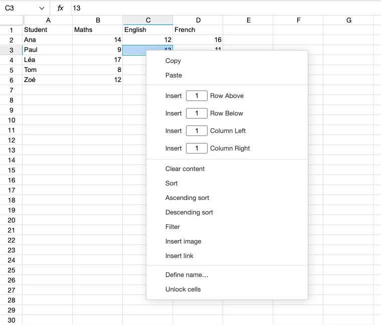

Rows and columns
Size
| Action | Effect |
|---|---|
| drag the right border of a column header | changes its width |
| drag the bottom border of a row header | changes its height |
| right-click on the header › Width, Height | size in pixels, for all the selected columns or rows |
Inserting, deleting
Right-click in a cell or on a header: Insert 1 Row Above, Insert 1 Row Below, Insert 1 Column Left, Insert 1 Column Right. The number is typed in the field. Right-click on a header: Delete selected Row, Delete selected Column.

Formulas are adjusted: their references follow the moved cells. The limit is 10,000 rows and 1,000 columns.
Hiding
Right-click on the header › Hide selected Row, Hide selected Column. Hidden cells are still calculated. To show them again, select the headers around them, then right-click › Show hidden.
Freezing
Frozen rows and columns stay visible when scrolling. Select the limit cell, then or View › Freeze:
| Command | Stay visible |
|---|---|
| Freeze to current row | the rows up to that of the cell, included |
| Freeze to current column | the columns up to that of the cell, included |
| Freeze to current cell | both |
| Cancel freezing | nothing in particular |
To keep the header row: click a cell of row 1, Freeze to current row.